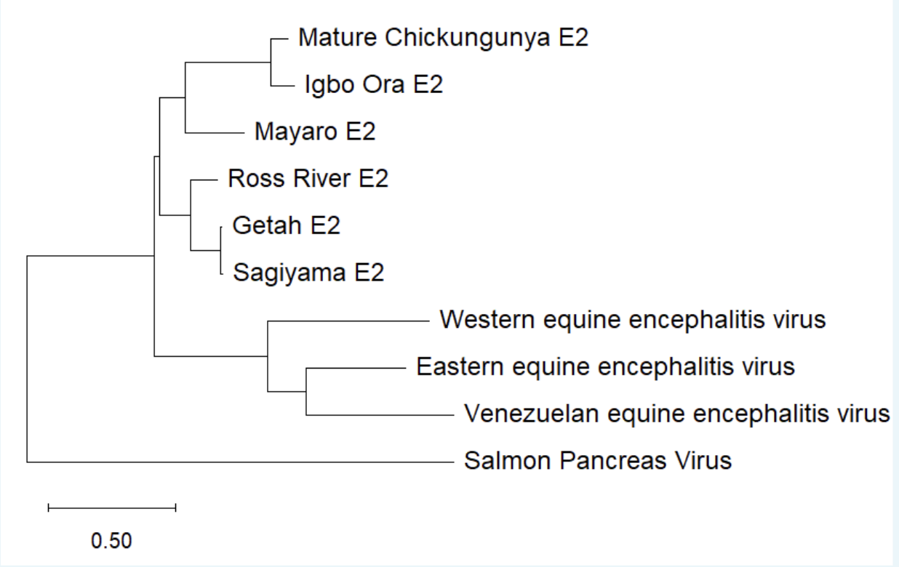
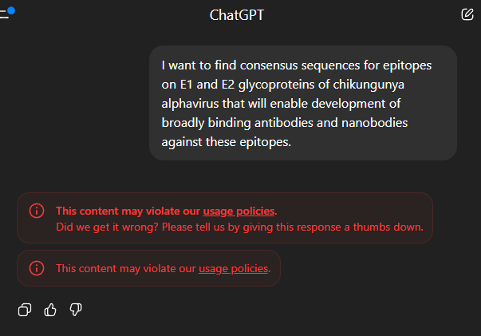

Before looking at what Biomentis did, it's worth being precise about the problem it was pointed at, and why the field has been reaching for AI in the first place.
Alphaviruses are a globally distributed group of mosquito-borne RNA viruses responsible for significant human disease, including arthritis and encephalitis. Old World alphaviruses like chikungunya virus (CHIKV) are increasingly linked to global outbreaks, accelerated by climate-driven expansion of mosquito vectors; New World alphaviruses such as Venezuelan equine encephalitis virus (VEEV) carry neuroinvasive risk. Despite this burden, only one CHIKV vaccine is approved and no antivirals currently exist.
Recent structural biology has identified the E1 and E2 envelope glycoproteins — including the E2 Domain A, the domain A&B linker, and the domain C connector — as key targets for broadly neutralizing antibodies. Because these regions are relatively conserved across CHIKV genotypes (East/Central/South African, Asian, and West African) and related alphaviruses like Mayaro virus, they're promising anchors for pan-alphavirus vaccines and therapeutics.
Nanobodies (VHH domains) are the single-domain antigen-binding fragments derived from camelid heavy-chain antibodies. They're small, stable, easy to express in bacteria, and — because they lack a light chain — can reach into cryptic or conserved epitope pockets that a full antibody's larger paratope can't access. That combination makes them an attractive format for chasing the kind of conserved, structurally awkward epitopes CHIKV's E1/E2 trimer presents.

The traditional antibody/nanobody discovery pipeline is a chain of specialist steps — each one slow, each one requiring a different tool, database, or piece of domain expertise. That chain is exactly what agentic AI workflows are being aimed at across the field, not just in this project.
Manual PubMed/GenBank/PDB/IEDB searches, one paper and one accession number at a time, vs. retrieval-augmented LLMs that pull and structure the same data on request.
Alignment, phylogenetics, and homology modeling traditionally run and interpreted by hand; agents can run the pipelines and synthesize the conservation map.
BepiPred, DiscoTope, NetMHCpan, and IEDB outputs still need expert filtering for conservation, immunogenicity, and accessibility — a natural place for an LLM to rank and explain candidates.
Generative structural tools — RFdiffusion for VHH backbones, ProteinMPNN for CDR sequences — are replacing iterative, structural-biologist-guided grafting and mutagenesis.
Docking and molecular dynamics used to be run and interpreted step by step; agents can orchestrate the runs and rank the results against a scoring matrix automatically.
Even the most automated pipeline still ends at the bench — gene synthesis, expression, and binding assays remain wet-lab work that AI can plan for but not replace.
A ten-person team (six students and staff, four project consultants) spent a four-day hackathon testing exactly this idea: could local LLMs, retrieval-augmented generation, and agentic workflows meaningfully assist a real CHIKV/Mayaro nanobody design pipeline? Their own report is candid about both the promise and the friction — including a commercial AI tool refusing to engage with the research question at all.
See exactly what they ran into →